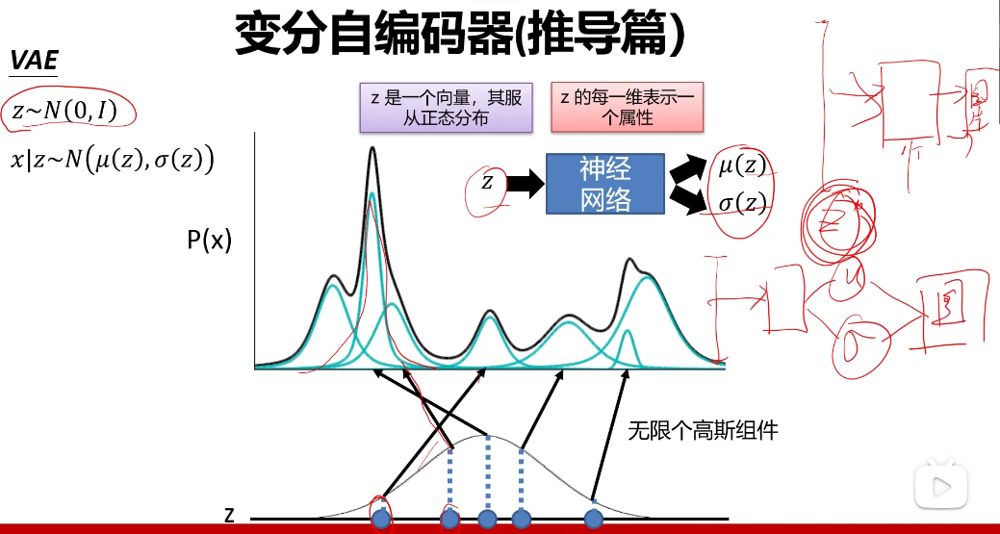

RNN解决的是序列(时序)问题, 因为他是依次生成的,
CNN解决的多数是图像分类问题
VAE
VAE中, 假定了z是一个(多维的)标准正态分布, 或者说z记录了标准正态分布的μ和Σ,这样也就知道了z的正态分布公式。


因为隐变量z的存在, 导致似然L不能直接最大化(这里的L是似然函数不是损失函数),
p(z)是正态分布, 数学表达式可以写出来, 但是p(x|z)是一个神经网络,虽然这个神经网络可以构建出来,但是具体的的数学表达式写不出来, 所以p(x)的积分是求不出来的。但因为z的正态分布里, 并不是说所有的z的取值, 都能够生成数据(样本), 所以我们就先用训练样本数据x来看看能产生哪些z, 用这些z来生成数据, 其他的z就认为是生成不了数据的, 就不考虑了。所以此时我们需要另一个分布q(z|x), 它就是由训练样本数据x通过神经网络训练得到的关于z的分布。(训练产生的分布q(z|x)逼近于真实分布p(z|x))。


可以看出, VAE并不是使似然L尽可能大来训练解码器, 而是使L的下边界Lb尽可能大来训练解码器, 也就是说VAE实际上是使L的下边界尽量大, 从而来尽量使得L大。
问题:
p(z)是正态分布, 为什么p(x|z)就一定是正态分布?
7
bits per pixel （bbp）是算每个像素要占用几个比特数，才能把所有可能的像素值都存下，比如单通道的灰度图像一般是256种不同的像素值，所以需要8比特来存储一个像素，也就是bbp=8。而有的图像的色彩模式有多个通道，比如有三个通道的如RGB，一般是每个通道都有256种不同的值，所以每个通道都需要8bit来存储，而RGB中因为有三通道，所以每个像素都包含三个通道，所以bbp=8*3=24，也就是说RGB中每个像素都需要24位比特来存储。所以如果有一个超长的十进制的值表示的图像A，要转换成bbp，公式应该是: bbp =⌈log2(A)⌉ / 像素数量 。其中⌈log2(A)⌉会得出该图像总共占用的bit位数。
图片（未压缩前）所占的存储空间大小=像素数*bbp=行*列*bbp，所以一张32*32*3的RGB图片（三通道）所占的存储空间就=32*32*24。
bits per dimension（bpd）简单的理解就是"bbp/通道数"，也就是将bbp再除以通道数。所以如果有一个超长的十进制的值表示的图像A，要转换成bbp，公式应该是bpd = ⌈log2(A)⌉/（像素的数量*通道数）。所以看起来dimension（维度）也就是指的是通道。但是实际上bpd还会再考虑每个通道占用多少比特，一般RGB是每个通道占用8bit，但有的图像的色彩模式的通道的取值范围会不一样，所以一般会统一为8bits每个通道来更好的统一比较（所以就有了很多比较标准是8bits/dimension）。所以实际公式应该是bpd =（ ⌈log2(A)⌉/8）/（像素的数量*通道数）